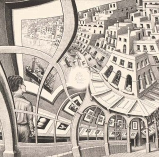

I don’t think I have ever done anything as peculiar in my life. Among other things, it shows a young man looking with interest at a print on the wall of an exhibition that features himself. How can this be? Perhaps I am not far removed from Einstein’s curved universe.
これまでの人生で、これほど奇妙なことをしたことはないと思う。とりわけ、この絵には、展覧会の壁に掛けられた版画を興味深そうに眺めている若者が描かれているのだが、その版画には彼自身が描かれているのだ。そんなことがどうして可能なのだろう？ おそらく私は、アインシュタインの湾曲した宇宙からそれほど遠くないところにいるのだろう。
オランダの版画家 M.C. エッシャー（M.C. Escher） が1956年に制作したリトグラフ作品 『画廊（Print Gallery）』 について、息子のアーサーに宛てた手紙の中で語った有名な一節です。
この作品は、エッシャーが得意とした「だまし絵（不可能図形）」や「自己言及（合わせ鏡のようなループ構造）」の最高峰の一つです。
エッシャー自身は直感と職人技でこの歪みを計算していましたが、2003年（エッシャーの死後）、ライデン大学の数学者ヘンドリック・レンストラ教授らの研究チームがこの絵の構造を完全に数学的に解明しました。
『Artful Mathematics: The Heritage of M. C. Escher』 (2003)
(芸術的な数学：M. C. エッシャーの遺産)
彼らはエッシャーが用いた歪みのアルゴリズム（複素関数）を特定し、コンピューターを用いてエッシャーが描ききれずに残した 「中央の空白の穴」の中身を完全に補完することに成功 しました。その穴の中には、さらに縮小された画廊と若者が無限にループして存在していることが証明されています。
『The Mathematical Structure of Escher’s Print Gallery』 (2007)
(エッシャーの『版画ギャラリー』の数学的構造)
『Loxodromic Spirals in M. C. Escher's Sphere Surface』 (2014)
(M.C.エッシャーの球面における等角螺旋)
『Image In painting Applied to Art Completing Escher's Print Gallery』 (2021)
(絵画におけるイメージを芸術に応用し、エッシャーの版画ギャラリーを完成させる)
『Comparison of CoModGANs, LaMa and GLIDE for Art Inpainting Completing M.C Escher’s Print Gallery』 (2022)
(MCエッシャーの版画ギャラリーを完成させるためのアートインペインティングにおけるCoModGAN、LaMa、GLIDEの比較)
『Moore, Escher, Penrose: A Conformal Golden Braid』 (2026)
(ムーア、エッシャー、ペンローズ：等角の黄金の組紐)